<img src="/cgi-bin/Count.cgi?df=sample.dat&sh=F">

Generated by the program testcount-sh
For NT and other platforms, replace Count.cgi with Count.exe. In the examples, few number of digits are used for brevity, by default, the counter can handle 80 digit long number (10^80)-1, which is a very large number, that is if data is not edited by hand, it is impossible to overflow the counter. These tests use count_reload=Yes, so you will see consecutive hits are incremented. Note: these examples do not cover all the capabilities of the counter. Please read the Counter documentation for details.
| simple, no frame, digit style A (default) |
<img src="/cgi-bin/Count.cgi?df=sample.dat&ft=0">
|
| frame with default frame-color and thickness is 4 (specified) |
<img src="/cgi-bin/Count.cgi?df=sample.dat&ft=4">
|
| 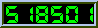 |
| A hidden counter is here |
<img src="/cgi-bin/Count.cgi?df=sample.dat&sh=F">
|
|
|
| Bangla digits |
<img src="/cgi-bin/Count.cgi?ft=0&df=sample.dat&dd=bang&comma=T">
|
| show the counter version |
<img src="/cgi-bin/Count.cgi?display=version">
|
| 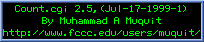 |
| countdown,Year 2000 implied from web server time |
<img src="/cgi-bin/Count.cgi?display=countdown&ft=0&dd=cd&negate=T">
|
| countdown,Year 2000,just show the days only |
<img src="/cgi-bin/Count.cgi?display=countdown&sdhms=F">
|

|
| countdown from GMT to Year 2000 |
<img src="/cgi-bin/Count.cgi?display=countdown&timezone=GMT+0000">
|
|
countdown to Year 2000, show the from date(sfd) below prgb (pen RGB) can be used to change the sfd color |
<img src="/cgi-bin/Count.cgi?cdt=2000;1;1;0;0;0&sfd=T&prgb=0000ff&dd=cd&ft=2&frgb=000000">
|
| 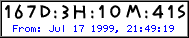 |
| countdown from New York to Year 2000 |
<img src="/cgi-bin/Count.cgi?display=countdown&dd=cdr&timezone=GMT-0500&sfd=T&ft=4">
|
| 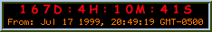 |
| countdown to a specific date ,say 8 AM, Feb 1 2000 |
<img src="/cgi-bin/Count.cgi?cdt=2000;2;1;8;0;0&sfd=T&dd=cdd&ft=2">
|
| 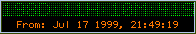 |
| countdown to past Feb 1 1998 8 AM |
<img src="/cgi-bin/Count.cgi?cdt=1998;2;1;8;0;0&sfd=T&dd=cd&ft=2&negate=T">
|
| 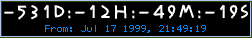 |
| difference between Jul 16,1999 10 PM and Jul 17 1999 10AM |
<img src="/cgi-bin/Count.cgi?cdf=1999;7;16;22;0;0&cdt=1999;7;17;10;0;0">
|
| countdown to year 2000 from Jul 17, 1999 |
<img src="/cgi-bin/Count.cgi?cdf=1999;7;17;0;0;0">
|
| No datafile specified with df ,therefore, random digits will be displayed |
<img src="/cgi-bin/Count.cgi?ft=0">
|
| digit style B |
<img src="/cgi-bin/Count.cgi?df=sample.dat&dd=B">
|
| digit style C,display comma if more than 3 digits |
<img src="/cgi-bin/Count.cgi?df=sample.dat&dd=C&comma=T">
|
| digit style D |
<img src="/cgi-bin/Count.cgi?ft=3&df=sample.dat&dd=D">
|
| 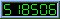 |
| digit style E, make white transparent |
<img src="/cgi-bin/Count.cgi?trgb=ffffff&df=sample.dat&dd=E">
|
| red frame with default thickness |
<img src="/cgi-bin/Count.cgi?df=sample.dat&frgb=ff0000">
|
| Hidden counter |
<img src="/cgi-bin/Count.cgi?df=sample.dat&sh=F">
|

|
| literal string with comma |
<img src="/cgi-bin/Count.cgi?lit=94032048040320&comma=T&dd=D&ft=2">
|
| 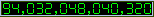 |
| frame color can be Red,Green and Blue triplets |
<img src="/cgi-bin/Count.cgi?ft=4&lit=0123456&frgb=0;0;255">
|
| frame color can be hex as well,using blue here |
<img src="/cgi-bin/Count.cgi?ft=4&lit=0123456&frgb=0000ff">
|
| frame color can be a name as well |
<img src="/cgi-bin/Count.cgi?ft=4&lit=0123456&frgb=Gray">
|
| 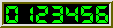 |
| change green digit-color to default pen color |
<img src="/cgi-bin/Count.cgi?lit=1234567&chcolor=T">
|
| change green digit-color to yellow |
<img src="/cgi-bin/Count.cgi?lit=1234567&srgb=00ff00&prgb=ffff00">
|
| show time (12 hr format) |
<img src="/cgi-bin/Count.cgi?display=clock">
|
| show time (12 hr format) don't pad hr with zero |
<img src="/cgi-bin/Count.cgi?display=clock&pad=F">
|
| 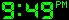 |
| show time (24 hr format) |
<img src="/cgi-bin/Count.cgi?display=clock&tformat=24">
|
| show GMT Time |
<img src="/cgi-bin/Count.cgi?display=clock&timezone=GMT+0000">
|
| show time of Dhaka (GMT+0600),Bangladesh |
<img src="/cgi-bin/Count.cgi?display=clock&timezone=GMT+0600">
|

|
| show date (MM-DD-YY) |
<img src="/cgi-bin/Count.cgi?display=date&dd=cdr">
|
| show date (DD-MM-YY) |
<img src="/cgi-bin/Count.cgi?display=date&dformat=ddmmyy">
|
| show date (DD-MM-YYYY) use YYYY to show full year |
<img src="/cgi-bin/Count.cgi?display=date&fy=T&dd=cd&dformat=ddmmyyyy">
|
| 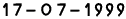 |
| show date (DD-MM-YY) use fy to show full year |
<img src="/cgi-bin/Count.cgi?display=date&fy=T&dd=cd&dformat=ddmmyy">
|
| make the green color transparent,no frame |
<img src="/cgi-bin/Count.cgi?df=sample.dat&trgb=00ff00">
|
| make the black color transparent |
<img src="/cgi-bin/Count.cgi?df=sample.dat&trgb=000000">
|
| make the black color transparent,change green color to a shade of gray |
<img src="/cgi-bin/Count.cgi?srgb=00ff00&prgb=101010&df=sample.dat&trgb=000000">
|
| display Lenna's image, also increment counter silently |
<img src="/cgi-bin/Count.cgi?display=image&dd=D&image=lenna.gif&df=sample.dat&incr=T&frgb=8B6508&ft=20">
|
| composite counter at the bottom center of the image, make white transparent |
<img src="/cgi-bin/Count.cgi?image=foo.gif&dd=E&comma=T&df=sample.dat&align=bottomcenter&tr=T&trgb=ffffff">
|
| composite counter at the top center of the image, offset is 5 pixels from top |
<img src="/cgi-bin/Count.cgi?image=yeehaw.gif&dd=A&df=sample.dat&comma=T&align=topcenter&offset=5&ft=4">
|
| composite counter at the bottom center of the image,make black transparent |
<img src="/cgi-bin/Count.cgi?image=peng.gif&dd=A&df=sample.dat&comma=T&align=bottomcenter&offset=40&trgb=000000&ft=0">
|
| rotate 270 degrees. Note, degrees are implied here |
<img src="/cgi-bin/Count.cgi?ft=0&df=sample.dat&rotate=T&dd=D">
|
| rotate 180 degrees |
<img src="/cgi-bin/Count.cgi?ft=0&df=sample.dat&dd=D°rees=180">
|
| 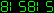 |
| rotate 90 degrees |
<img src="/cgi-bin/Count.cgi?ft=0&df=sample.dat°rees=90&dd=D&prgb=ffff00">
|
Muhammad A Muquit
Generated on: Sat Jul 17 21:49:28 EDT 1999 by testcount-sh (1.2)
(Linux madina 2.0.36 #1 Tue Oct 13 22:17:11 EDT 1998 i686 unknown)